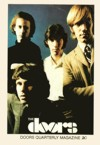
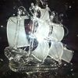

|

|

|
 |

|

|

|

|

|

|
Throughout the years the Doors Quarterly Magazine reviewed hundreds of
books, albums,
bootlegs, videos,... You name it, whenever something new hit the
market, the magazine would
run a feature. Each and every single issue excelled in announcing
the new stuff and never failed
to give its readers an honest idea of what it was about; was it
worth picking up, or rather something
you're better off without... The ultimate 'how to buy The Doors'
guide indeed - a real money saver.
After the demise of the original fanclub in 1999 new releases
suddenly came into a world without
that much valued, welcoming and very welcome DQM review by Rainer
Moddemann. By this time
the internet was in full blossom, and hundreds of Doors themed
websites were more or less
performing this once role of the Doors Quarterly Magazine - never
quite the same of course!
BUT... We're back! The Doors Quarterly Magazine Online is The
Doors Quarterly of the 21st Century,
and once again we will be bringing you personal reviews of items
that never made the original
printed magazines. Not tackling the latest or newest per se, it
will be a bit random and freeform.
Just grab a ticket below, jump right in and you'll soon see what
we're all about! (K.C.)

|
THE DOORS:
|
CD / vinyl 2014 |
||

|
THE DOORS: |
vinyl 2013 |
||
|
"JIM" by Harold Cobert review by Patricia Devaux - Feb. 2015 |
book 2014 |
|||

|
"JIM MORRISON" by Mario Schr�der & Leipziger Ballett review by J�rgen Schuschke - March 2015 (in German language only) |
theater play 2011 |
||
|
THE DOORS:
|
vinyl |
|||
|
THE DOORS: LIVE AT THE AQUARIUS THEATRE: |
vinyl |
|||

|
THE DOORS: |
CD |
||

|
THE DOORS: |
CD |
||
|
THE DOORS: BACKDOOR MAN - SEATTLE 1970 review by Kevin Chiotis - August 2016 |
CD / vinyl 2015 |
|||

|
THE DOORS: WAITING FOR THE SUN - 50TH ANNIVERSARY review by Kevin Chiotis - June 2018 |
CD + vinyl 2018 |
||

|
THE DOORS CLASSICS review by Kevin Chiotis - May 2020 |
vinyl 1985 |
||
|  |
THE CRYSTAL SHIP: MEANING & CONTENT essay by Sonia De Pascalis - January 2021 |
essay 2020 |
||

|
THE DOORS: LEGACY: THE ABSOLUTE BEST review by Kevin Chiotis - July 2023 |
CD 2003 |

|

|